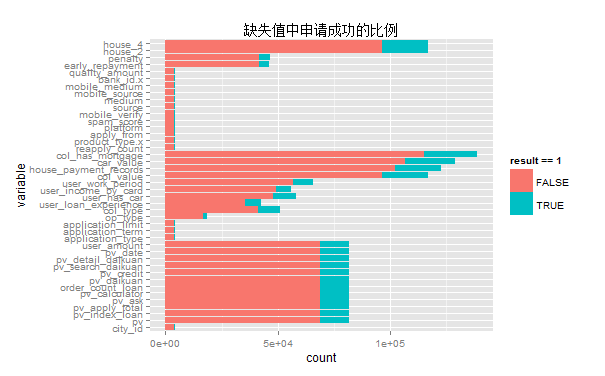

Rank 2nd in Data Mining Part
Created by Chiffon
申请流程
申请流程
quality.final.txt
product.final.txt
user.final.txt
order_train.txt(labeled)
order_test_no_label.txt(no label)

增加新的变量:
# load("tr4.Rdata")
model = glm(result ~ . -bank_id ,
data = train_final,
family = "binomial")
summary(model)
pre = predict(model, test_final)
out = (pre > 0.215) + 0
writeLines(as.character(out), "submit/3.26.1.txt") # 0.2985
选择合适的阈值